Section 2.2: Tables and Graphs for Quantitative Data
Learning Objectives
1.Create dot plots for discrete data.
2.Create and interpret frequency distributions, including
•Lower class limits
•Upper class limits
•Class width
3.Create and interpret histograms for discrete and continuous data.
4.Identify the shape of a distribution.
5.Create and interpret stem-and-leaf plots.
6.Interpret Time-Series Plots
Recall that quantitative variables are numerical. They can be either discrete (things you count) or continuous (things you measure). In this section we will organize both types of numerical data into tables and charts.
Frequency Distributions and Dot Plots
Example 1: Number of Spam Calls
A student counted the number of telemarketer (spam) calls she got each day for the first 24 days of the month. She looked at her phone records and wrote down the number of spam calls she received each day. The data she collected is in Table 4.
What type of data collection is this? What type of data is collected? Make a frequency and relative frequency table displaying the data.
Photo by Lindsey LaMont (opens in a new tab) on Unsplash (opens in a new tab)
Table 4: Number of Spam Phone Calls | |||
|---|---|---|---|
2 | 1 | 1 | 0 |
3 | 2 | 4 | 4 |
1 | 3 | 6 | 2 |
2 | 1 | 1 | 7 |
2 | 6 | 4 | 5 |
5 | 7 | 5 | 1 |
Solution:
Since the student looked back at her phone records,
this is an observational study. It is retrospective, or
case-control, because she is looking at records from
the past. The variable is the number of spam calls she
received, which is quantitative and discrete because
she is counting the calls.
To organize the data, first let’s make a list of the possible number of calls she could receive in a day and put them in order from smallest to largest. This step was unnecessary in section 2.1 when we were working with qualitative data. But here, having the data organized in order makes sense.
Next, recall the definitions of frequency and relative frequency from section 2.1.
Definition 1
The frequency of an observation is the number of times it occurs in the data.
The Relative Frequency of an observation is the number of times it appears in the data divided by the total number of observations =Frequency/Total.
The sum of the relative frequencies over all possibilities is always equal to 1 (or 100% if you are using percent).
To find the frequencies we count the number of times each observation occurred in the data. Table 5 shows the tally marks you would generate going through the data one-by-one. After completing the tally, you can fill in the frequency column.
Table 5: Frequency Table for Number of Spam Calls | ||
|---|---|---|
Number of Calls per Day | Tally | Frequency |
0 | | | 1 |
1 | |||| | | 6 |
2 | |||| | 5 |
3 | || | 2 |
4 | ||| | 3 |
5 | ||| | 3 |
6 | || | 2 |
7 | || | 2 |
Total | 24 | |
To add the relative frequency column, divide each frequency by the total.
Table 6: Frequency and Relative Frequency Table | ||
|---|---|---|
Number of Calls per Day | Frequency | Relative Frequency |
0 | 1 | 1/24≈ 0.0417 |
1 | 6 | 6/24=0.25 |
2 | 5 | 5/24≈0.2083 |
3 | 2 | 2/24≈0.0833 |
4 | 3 | 3/24=0.125 |
5 | 3 | 3/24=0.125 |
6 | 2 | 2/24≈0.0833 |
7 | 2 | 2/24≈0.0833 |
Total | 24 | 24/24=1 |
In Table 6, all decimals were rounded to 4 places. The sum of the relative frequencies is 24/24, which is 1. But, if you add the rounded decimals, you will obtain 0.9999. The difference is due to rounding and is not due to an error. In practice, the sum of the relative frequencies will either be exactly 1 or be slightly off due to rounding.
In section 2.1, we used the frequency table to generate a bar graph. But bar graphs are limited to use with qualitative data. Here we will discuss other options.
Definition 2: Dot Plot
To create a dot plot for discrete data, make a number line that contains all the observations. Then place each observation on the number line, stacking the dots as necessary.
•The number of dots above each value is the frequency of the observation.
•Dot plots should only be used for discrete data.
•Dot plots are useful when the number of observations is reasonably small.
Example 2: Number of Spam Calls Dot Plot
Make a dot plot for the data in Table 4, number of spam calls per day.
Table 4: Number of Spam Phone Calls | |||
|---|---|---|---|
2 | 1 | 1 | 0 |
3 | 2 | 4 | 4 |
1 | 3 | 6 | 2 |
2 | 1 | 1 | 7 |
2 | 6 | 4 | 5 |
5 | 7 | 5 | 1 |
Solution:Start with a number line that stretches from 0 (the lowest number of calls) to 7 (the most calls received).
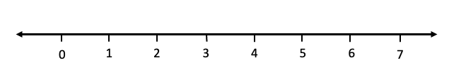
The first values from the set was 2. Place a dot above 2 on the number line.
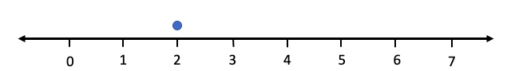
The next three observations were 1, 1, and 0. Place dots above these numbers on the line. Since 1 is listed twice, begin to stack the dots above the 1.
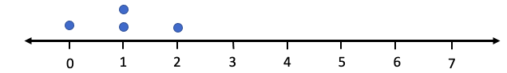
Continue until you have placed a dot for each data value. Your dot plot should match the final product, seen in figure 2.13.
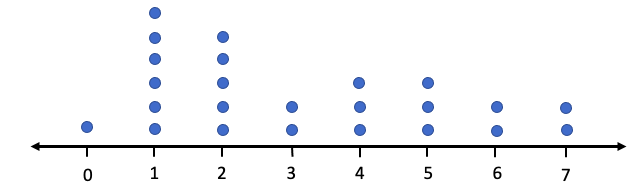
Figure 2.13: Dot plot for spam call data.
You can see that most commonly the student would get 1 or 2 spam calls per day. The frequency is readily seen as the number of dots above each value on the axis. You can immediately see that there was only one time during the month that she received no telemarketer calls.
STATBELT Utility can be used to create a dot plot. Figure 2.14 is the dot plot for spam calls created using STATBELT Utility.
STATBELT Utility- Making Dot Plots
1.Type or paste the data into one column.
2.Select Graphs → Dot plot.
3.Choose the column for “Column” and click “Open graph in a new window.”
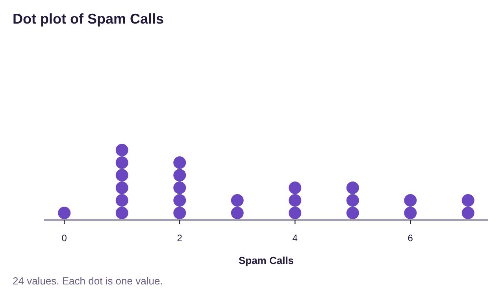
Figure 2.14: Dot plot for spam call data created using STATBELT Utility.
Sometimes we have so much data that using a dot plot is not helpful. Remember that our goal is to summarize the data to visualize broad trends. If we look at all the data values together it is easy to get lost. This is particularly true when we deal with continuous data. To organize continuous data, we will create dividers among the data and use them to group the data into classes. This will make it easier to generalize the data and allow us to make what we call histograms.
Definition 3: Classes, Upper and Lower-Class Limits, and Class Width
An interval in which we group numerical data is called a class. Classes are interval ranges of equal width that contain data. The frequency of a class is the number of observations that occur in the interval.
•A frequency table using classes is a list of each class and its frequency.
•The lower-class limits are the smallest numbers that can belong to each class.
•The upper-class limits are the largest numbers that can belong to each class.
•The class width is the difference between any two successive lower class or upper-class limits.
•A frequency table is also called a frequency distribution.
Example 3: A Frequency Table Using Classes for Continuous Data
Table 7 is a frequency table for the age of United States Presidents at inauguration. Identify the classes, the lower-class limits, the upper-class limits, and the class width. What is the relative frequency for the class 55 – 59?
Table 7: Age of Presidents at Inauguration | |
|---|---|
Class | Frequency |
40-44 | 2 |
45-49 | 7 |
50-54 | 13 |
55-59 | 12 |
60-64 | 7 |
65-69 | 3 |
70-74 | 1 |
75-79 | 1 |
Solution: The classes are the groups 40 – 44, 45 – 49, 50 – 54, 55 – 59, 60 – 64, 65 – 69,
70 – 74, and 75 – 79. No president has been under 40 or over 80 when inaugurated.
The lower-class limits are the lowest possible value in each interval, namely 40, 45, 50, 55, 60, 65, 70, and 75. The lower-class limits are highlighted in red in figure 2.15. The upper-class limits are the largest values in the intervals, namely 44, 49, 54, 59, 64, 69, 74, and 79. They are highlighted in green in figure 2.15. The frequency column is the same as it was in section 2.1. It is highlighted in blue in figure 2.15.
Figure 2.15: Identifying lower-class limits, upper-class limits, and frequency.
The class width is most easily described as the “jump” between two classes. The lower-class limits jump from 40 to 45, 45 to 50, 50 to 55, etc. where each jump is 5 units. Thus, the class width is 5. The definition says we are to find the class width by subtracting successive class limits, so we could find it subtracting 40 from 45 to get 5, or 69 – 64 = 5. But again, it is usually simpler to look at the size of the jump. That is the class width!
The last part of the question asks us to find the relative frequency of the class 55 – 59. From the table we can see that the frequency is 12, meaning that there have been 12 presidents who were between 55 and 59 at inauguration. To find the relative frequency we also need the total. Summing the frequencies in the frequency column we get the total = 46. So, the relative frequency for the 55 – 59 class is 1246≈0.2609. So, 0.26, or 26% of U.S. presidents have been between 55 and 59 years old at inauguration.
Histograms
In section 2.1, we first made frequency and relative frequency tables, then we used bar graphs to visualize the data. When we have quantitative data, we use a histogram instead of a bar graph. A histogram is similar, with a few differences.
Definition 4: Histogram
A histogram is a graph that is constructed using rectangles above each class of data. The height of the rectangle is the frequency or relative frequency of the class. The width of each rectangle is the class width.
•The bars of a histogram touch.
•The lower-class limits are used to mark the bases of the rectangles. *
*Technically, we should use the class boundaries, which are the midpoints between the lower-class limits of one class and the upper-class limits of the next. But the results are nearly the same and will be undetectable using technology. So, we choose to use the easier option.

Important Point!
Histograms are used for quantitative data, while bar graphs are used for qualitative data! If you are organizing categories, use a bar graph! If you are organizing numbers, use a histogram!
Example 4: A Frequency Histogram Using Classes for Continuous Data
Create a frequency histogram for the ages of United States Presidents at inauguration given in Table 7.
Table 7: Age of Presidents at Inauguration | |
|---|---|
Class | Frequency |
40-44 | 2 |
45-49 | 7 |
50-54 | 13 |
55-59 | 12 |
60-64 | 7 |
65-69 | 3 |
70-74 | 1 |
75-79 | 1 |
Solution: Normally we would not do this by hand, but it is instructive to work through one
example showing the steps involved.
First, create a number line that will allow you to place all the data between the lowest value 40 and the highest value 79. Then use the lower-class limits to mark off increments on the horizontal (x) axis.
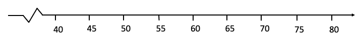
Next make a vertical axis that will have a height up to maximum frequency, which in this case is 13.
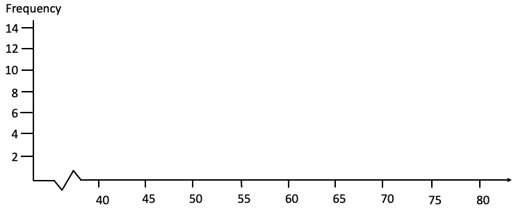
Draw a rectangular box with base between 40 and 45 and a height equal to 2, since 2 is the frequency for that class. Then draw a box with base between 45 and 50 with height 7, since 7 is the frequency of that class.
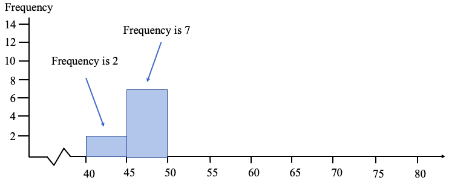
Keep going until you have drawn a box for each of the classes. Your histogram should look something like figure 2.16.
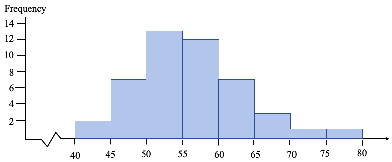
Figure 2.16: Histogram for the age of a US President at inauguration.
Of course, the better option is to use technology to create the histogram.
STATBELT Utility- Making Histograms
Open STATBELT Utility and type or copy the data into one column. STATBELT Utility makes a histogram from raw data, not summarized data.
1.Select Graphs → Histogram.
2.Choose the column for “Column.”
3.Choose “Frequency” or “Relative frequency” for “Bar height.”
4.Uncheck “Choose start and bin width automatically.” (STATBELT Utility calls classes “bins.”)
5.Type the lowest lower-class limit for “Start at” and the class width for “Bin width.”
6.Check “Show values above the bars” if you choose.
7.Click “Open graph in a new window.”
Example 5: Using STATBELT Utility to Create a Frequency Histogram.
Create a frequency histogram for the ages of United States Presidents at inauguration (data found in Table 7). The raw data in a column can be copied and pasted into STATBELT Utility by opening the presidents’ ages data file (opens in a new tab). The data are also built into STATBELT Utility: choose “U.S. Presidents Age at Inauguration” from the “Sample Data” menu above the data table.
Solution:Click the link and copy the data into STATBELT Utility, or load the “U.S. Presidents Age at Inauguration” sample data. Select Graphs → Histogram and choose “Age at inauguration” for “Column.” Uncheck “Choose start and bin width automatically,” type 40 for “Start at” and 5 for “Bin width,” and select “Frequency” for “Bar height.” Check “Show values above the bars” and click “Open graph in a new window.”
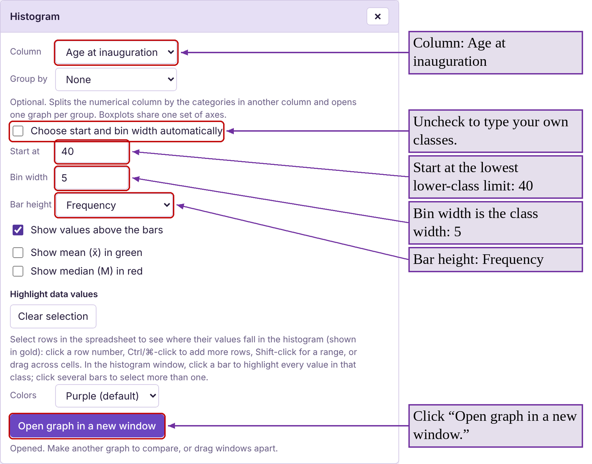
You can see the histogram generated by STATBELT Utility in figure 2.17. Note that the frequencies that we found in creating the frequency table are now listed as the heights of the bars. If you want a relative frequency histogram, follow the same steps but instead select “Relative frequency” for “Bar height.”
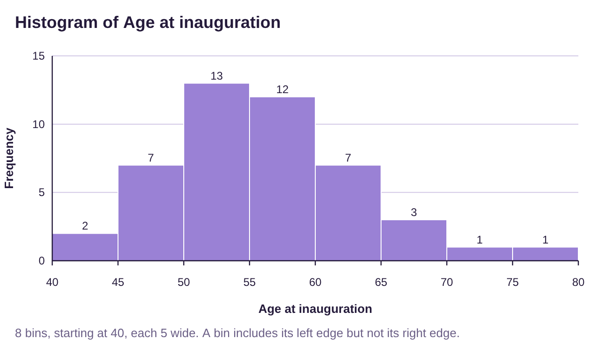
Figure 2.17: Histogram for the age of a US President at inauguration, generated by STATBELT Utility.
Example 6: Poverty Rates in the United States 2016-2018
Table 8 lists each state and the District of Columbia along with the average poverty rate between 2016 and 2018. (The poverty rate is the percent of the population in the state living at or below poverty). Make a relative frequency table and histogram for the poverty rates with classes starting at 5.0 and a class width 2.5. You can copy the poverty rate data (opens in a new tab), or choose “U.S. Poverty Rates by State (and DC)” from STATBELT Utility’s “Sample Data” menu.
Table 8: Average Poverty Rates in the US from 2016-2018 | |||||||
|---|---|---|---|---|---|---|---|
Alabama | 16.0 | Illinois | 10.9 | Montana | 10.4 | Rhode Island | 10.3 |
Alaska | 12.2 | Indiana | 11.8 | Nebraska | 10.4 | South Carolina | 14.1 |
Arizona | 14.4 | Iowa | 9.2 | Nevada | 12.2 | South Dakota | 11.8 |
Arkansas | 15.5 | Kansas | 10.8 | New Hampshire | 6.4 | Tennessee | 12.6 |
California | 12.5 | Kentucky | 15.3 | New Jersey | 9.1 | Texas | 13.7 |
Colorado | 8.9 | Louisiana | 19.8 | New Mexico | 18.7 | Utah | 7.9 |
Connecticut | 9.9 | Maine | 12.6 | New York | 11.8 | Vermont | 9.6 |
Delaware | 9.6 | Maryland | 7.1 | North Carolina | 14.1 | Virginia | 10.7 |
District of Columbia | 14.9 | Massachusetts | 9.8 | North Dakota | 10.9 | Washington | 10.3 |
Florida | 13.6 | Michigan | 11.0 | Ohio | 12.8 | West Virginia | 17.2 |
Georgia | 14.7 | Minnesota | 8.7 | Oklahoma | 14.0 | Wisconsin | 9.5 |
Hawaii | 9.5 | Mississippi | 19.8 | Oregon | 10.6 | Wyoming | 11.4 |
Idaho | 11.3 | Missouri | 11.9 | Pennsylvania | 11.5 | ||
Solution: To make the frequency table, we first need to determine the classes. The lowest poverty rate was 6.4% and the highest was 19.8%. That means we will start with 5 as the lowest class limit, and add increments of the class width, 2.5, until we get to 19.8. The lower-class limits would then be 5, 7.5, 10, 12.5, 15, and 17.5. Since the data are all rounded to one decimal place, the first class could contain any number up to 7.4. Anything higher then 7.4 (7.5 or more) goes into another class. So, the first class is 5 – 7.4. Similarly, the second class would contain any number up to 9.9, so it would be 7.5 – 9.9. We can add the class width to each of the upper-class limits to generate them. The upper-class limits will be 7.4, 9.9, 12.4, 14.9, 17.4, and 19.9. Make sure that each poverty rate from Table 8 can be placed into one of the classes shown in Table 9 below.
Whether we count the data in each class by hand using the tally method, or sorting the data first, we get the frequencies given in Table 9.
Table 9: Average Poverty Rates 2016-2018 | |
|---|---|
Class | Frequency |
5.0 - 7.4 | 2 |
7.5 - 9.9 | 11 |
10.0 - 12.4 | 19 |
12.5 - 14.9 | 12 |
15.0 - 17.4 | 4 |
17.5 - 19.9 | 3 |
Total | 51 |
Convert to a relative frequency table by dividing each frequency by 51, shown in Table 10.
Table 10: Average Poverty Rates 2016-2018 | |
|---|---|
Class | Relative Frequency |
5.0 - 7.4 | 0.039 |
7.5 - 9.9 | 0.216 |
10.0 - 12.4 | 0.373 |
12.5 - 14.9 | 0.235 |
15.0 - 17.4 | 0.078 |
17.5 - 19.9 | 0.059 |
Total | 1 |
To make the histogram, we can either do it by hand using the values in Table 10 or use STATBELT Utility. Using STATBELT Utility, select Graphs → Histogram and choose “Average Poverty rate 2016-2018” for “Column.” Uncheck “Choose start and bin width automatically,” type 5 for “Start at” and 2.5 for “Bin width,” and select “Relative frequency” for “Bar height.” Check “Show values above the bars” and click “Open graph in a new window.”
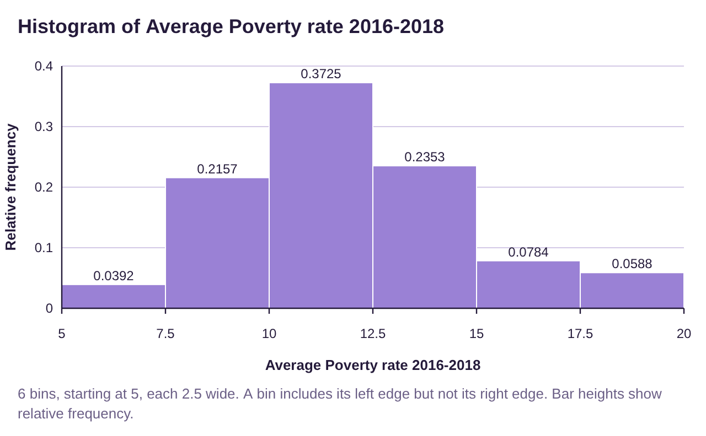
Figure 2.18: Histogram for the average poverty rate by state, generated by STATBELT Utility.
The histogram is shown in figure 2.18. Note that the relative frequencies are the same as the ones that we calculated in Table 10, but STATBELT Utility shows four decimal places.
Histograms and the Shape of a Distribution
We will use histograms for the rest of this book to describe the “shape” of a quantitative data distribution. There are as many different shapes as there are data sets in the world, but we will focus on four shapes that we will see most commonly. See figure 2.19.
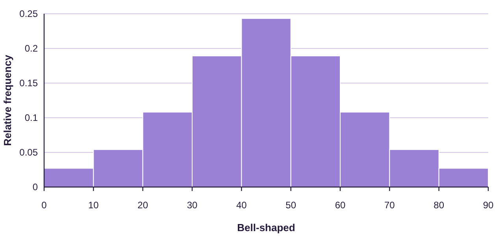
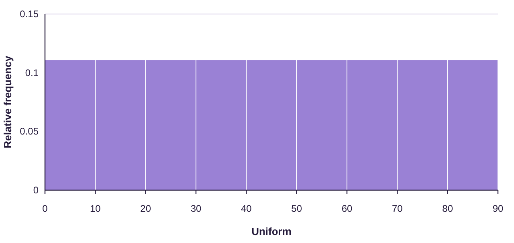
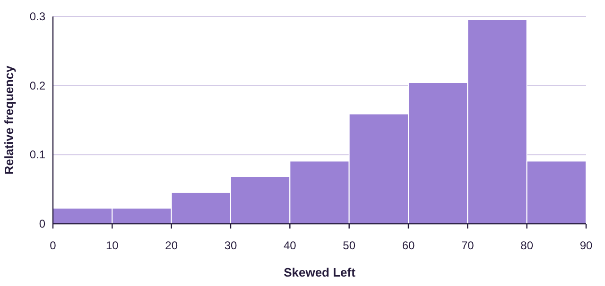
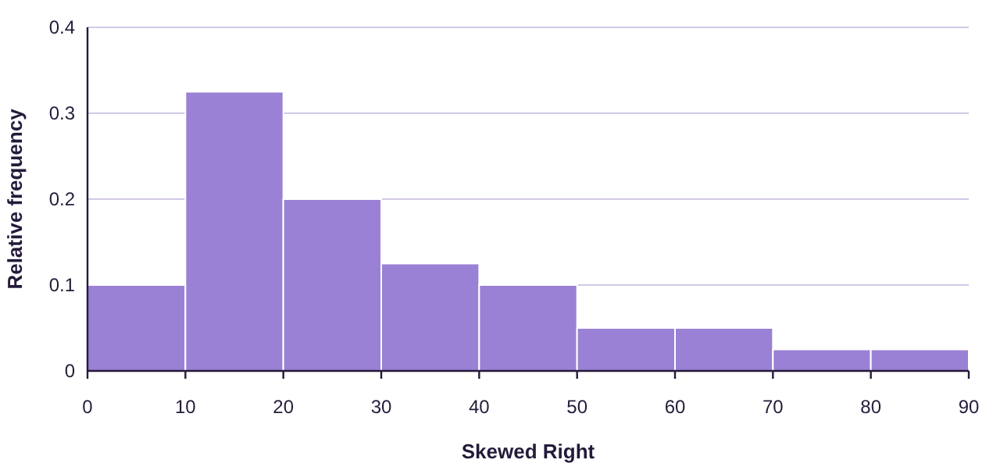
Figure 2.19: Describing the shape of distributions using histograms.
Bell-shaped is also called “Normal”, and we will study these distributions in detail later in the book. Skewed left is also known as negatively skewed, while skewed right is also called positively skewed.
Example 7: Describing the Shape of a Distribution
Describe the shape of the distribution for the age of US Presidents at inauguration. The histogram is found in figure 2.17. The data can be copied and pasted into STATBELT Utility from the presidents’ ages data file (opens in a new tab).
Solution:The histogram from figure 2.17 is reproduced below. While it is not a perfectly bell-shaped distribution, it is reasonably close, with a very slight skew to the right. We would classify this as bell-shaped.
Example 8: Describing Shape of a Distribution
Describe the shape of the distribution for the average poverty data in Table 8. The histogram is found in figure 2.18. You can copy the poverty rate data (opens in a new tab).
Solution:The histogram from figure 2.18 is reproduced below. Again, this appears to be bell-shaped.
Example 9: Describing Shape of a Distribution
Data collected from 228 high school students included their grade point average (GPA). The histogram for grade point average is shown in figure 2.20. Describe the shape of the distribution.
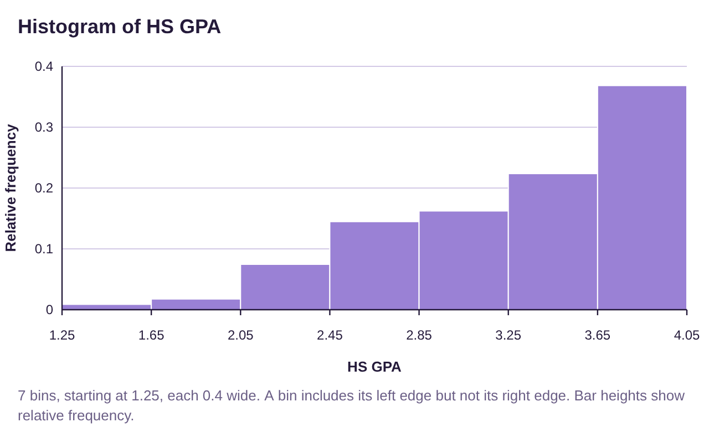
Figure 2.20: Histogram for High School Grade Point Average.
Solution:Because the “tail” is on the left, we say this data is skewed to the left, or negatively skewed.
Example 10: Describing Shape of a Distribution
The inflation-adjusted earnings of superhero movies from Marvel and DC have been organized into a histogram shown in figure 2.21. Describe the shape of the distribution.
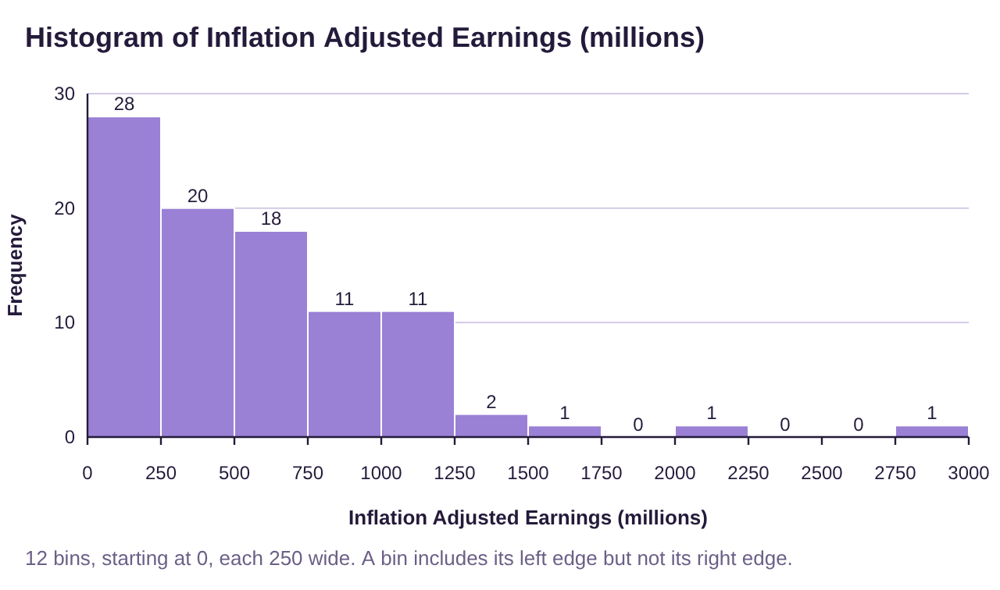
Figure 2.21: Histogram of adjusted earnings for superhero movies.
Solution:Because the “tail” is on the right we say this data is skewed to the right, or positively skewed.
Stem-and-Leaf Plots
A Stem-and-Leaf plot breaks each data value into a pair: a stem and a leaf. For example, the number 54 can be seen as a stem = 5 tens and a leaf = 4 ones. When we have multiple numbers with the same stem, we only write the stem once, but write each leaf separately, in order from smallest to largest. So, if we had the data values 54, 57, and 59, we would write this as:
Stem (tens) | Leaf (ones) |
|---|---|
5 | 4 7 9 |
Each different stem will have its own row in the stem-and-leaf plot. For example, if the data were 54, 57, 59, 61,63, 67, 68, 70, and 73, we would add a stem row for the 60’s and a stem row for the 70’s, then write in the leaves. The plot would look like this:
Stem (tens) | Leaf (ones) |
|---|---|
5 | 4 7 9 |
6 | 1 3 7 8 |
7 | 0 3 |
You can see the frequency of each stem by counting the number of leaves. This makes a stem-and-leaf plot like a sideways frequency histogram, with one advantage: You can see the original data in the stem-and-leaf plot. For example, by looking at the plot you can see that the number 71 was not among the data, but 70 was. Stem-and-leaf plots are usually best to use for reasonably small data sets. Too much data will make the leaves stretch too far and become difficult to understand. In those cases, a histogram is likely a better choice.
Definition 5: Stem-and-Leaf Plot
A Stem-and-Leaf Plot is a graph that displaying data split into two parts: a stem that is the digits of the data to the left of an indicated position, and the leaf consisting of the digits of the data to the right of the position.
•The stems are ordered from smallest to largest in the first column.
•Include all stems between the smallest and largest, even if a stem has no leaves. If the stem has no leaves, the row will contain the stem, but the leaves will be left blank.
•The leaves are ordered from smallest to largest.
•When data values are repeated, the leaf is also repeated.
•The number of leaves for each stem is the frequency of the stem.
•Stem-and-leaf plots are used for reasonably small sets of quantitative data only.
Example 11: Poverty Rates in the United States 2016-2018
Table 11 lists the average poverty rates in the United States (previously given in Table 8) sorted from lowest to highest. Make stem-and-leaf plot of the data using the stem as the digits to the left of the decimal and the leaf as the digits to the right of the decimal. You can copy the poverty rate data (opens in a new tab).
Table 11: Percent of Population of States Living in Poverty 2016-2018 (sorted) | ||||||||
|---|---|---|---|---|---|---|---|---|
6.4 | 9.2 | 9.9 | 10.7 | 11.4 | 12.2 | 13.6 | 14.7 | 18.7 |
7.1 | 9.5 | 10.3 | 10.8 | 11.5 | 12.2 | 13.7 | 14.9 | 19.8 |
7.9 | 9.5 | 10.3 | 10.9 | 11.8 | 12.5 | 14.0 | 15.3 | 19.8 |
8.7 | 9.6 | 10.4 | 10.9 | 11.8 | 12.6 | 14.1 | 15.5 | |
8.9 | 9.6 | 10.4 | 11.0 | 11.8 | 12.6 | 14.1 | 16.0 | |
9.1 | 9.8 | 10.6 | 11.3 | 11.9 | 12.8 | 14.4 | 17.2 | |
Solution:The stems will consist of numbers from 6 through 19. The first row contains only 6.4, so we put a 4 into the leaf.
Stem (ones) | Leaf (tenths) |
|---|---|
6 | 4 |
The next values are 7.1 and 7.9, so we put a 1 and 9 into the stem row for 7.
Stem (ones) | Leaf (tenths) |
|---|---|
6 | 4 |
7 | 1 9 |
Continuing in this way we complete the plot, given in figure 2.22.
Stem (ones) | Leaf (tenths) |
|---|---|
6 | 4 |
7 | 1 9 |
8 | 7 9 |
9 | 1 2 2 5 5 6 6 8 9 |
10 | 3 3 4 4 6 7 8 9 9 |
11 | 0 3 4 5 8 8 8 9 |
12 | 2 2 5 6 6 8 |
13 | 6 7 |
14 | 0 1 1 4 7 9 |
15 | 3 5 |
16 | 0 |
17 | 2 |
18 | 7 |
19 | 8 8 |
Figure 2.22: Stem-and-leaf plot for average poverty in the US 2016-2018.
Follow the instructions below to make the stem and leaf plot using STATBELT Utility. Note that the stem digit was set to “Ones” because the leaf was the digit to the right of the decimal point. See figure 2.23.
STATBELT Utility- Making Stem-and-Leaf Plots
Open STATBELT Utility and type or copy the data into one column.
1.Select Graphs → Stem and leaf plot.
2.Choose the column for “Column.”
3.Choose the “Stem digit,” the place value of the stems. Leave “Leaf digits” at 1 digit.
4.Click “Open graph in a new window.”
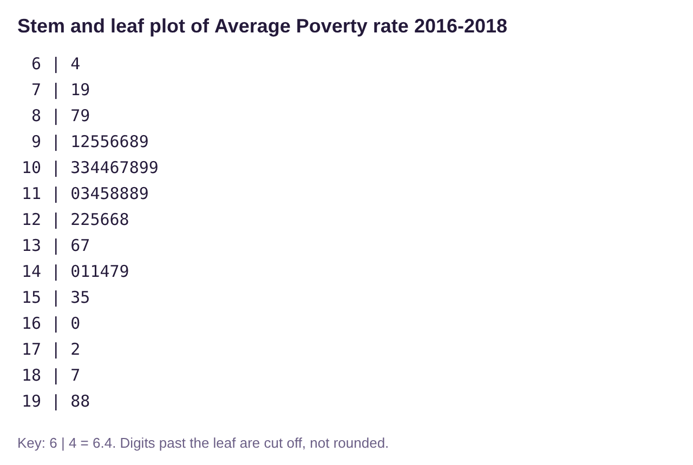
Figure 2.23: Stem-and-leaf plot for average poverty in the US 2016-2018, using STATBELT Utility.
Example 12: Interpreting a Stem-and-Leaf Plot
The stem-and-leaf plot in figure 2.24 was created from exam scores on a statistics exam. Use the plot to answer the following questions.
a)What score appeared most often?
b)Were there any scores in the 50’s?
c)Did anyone score a 95 on the exam?
d)What stem had the highest frequency?
e)How many students scored 80 or higher?
f)Describe the shape of the distribution of grades.
Stem (tens) | Leaf (ones) |
|---|---|
2 | 7 |
3 | 2 6 |
4 | 7 |
5 | |
6 | 2 5 5 7 8 |
7 | 0 0 1 2 4 5 7 8 |
8 | 1 3 3 4 4 4 4 4 8 8 9 |
9 | 0 0 1 2 3 3 6 7 8 9 9 9 |
10 | 0 0 0 |
Figure 2.24: Stem-and-leaf plot for test scores on a statistics exam.
Solution:a) The leaf that was repeated most often was the 4 in the stem row for 8. That means that the score 84 appeared 5 times in the data, which was the highest frequency.
b)The were no scores in the 50’s because the stem row for 5 is empty.
c)There was no score exactly equal to 95. There were two 93s, and the next score was a 96.
d)The longest row of leaves was in the row with stem 9, representing grades in the 90’s. There are 12 leaves, meaning that there were 12 scores in the 90’s on the exam. We say the modal stem, or modal class, was grades in the 90’s because they had the highest frequency.
e)There were 26 scores in the rows with stem 8, 9, or 10. That means that 26 grades were 80 or higher.
f)Looking at the stem-and-leaf plot turned sideways, it appears to be skewed left.
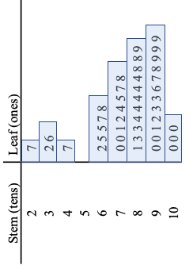
Time-Series Plots
Definition 6: Time-Series Plot
A Time-Series Plot is a graph that displaying quantitative data over equal increments of time. The horizontal axis represents time, and the vertical axis represents some other numerical quantity. Points are plotted and connected using line segments.
Example 13 Time-Series Plot
Juneteenth is the anniversary celebration of the day the Union army arrived in Galveston, Texas and announced that all enslaved African Americans in the state were free in accordance with President Abraham Lincoln’s Emancipation Proclamation. Juneteenth is considered the “longest running African American holiday”. It was first observed at the state level in Texas in 1980, although celebrations go back to 1865. The time-series plot in figure 2.25 represents the number of states observing the Juneteenth holiday by year since 1980. How many states observed Juneteenth in the year 2000? How many observed Juneteenth in 2003? How many observe it in 2022? You can access the Juneteenth data (opens in a new tab).
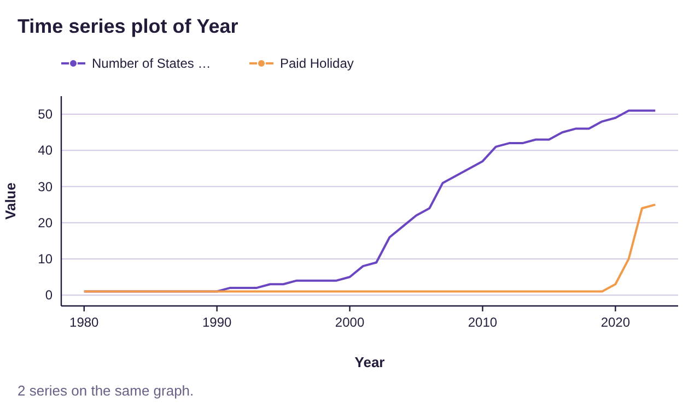
Figure 2.25: Time-series plot for the number of states observing Juneteenth by year.
Juneteenth Flag-Image source: CNN article (opens in a new tab)
Solution: Figure 2.26 is a blow up of the time-period and is probably a little easier to read. In the year 2000, there were 5 states that observed Juneteenth, but only one that observed it as a paid holiday (Texas). In 2003, there were 16 states observing Juneteenth, but still only one as a paid holiday. In 2022 all 50 states and the District of Columbia observe Juneteenth. Additionally, there are 24 states observing it as a paid holiday, with Connecticut making 25 in 2023.
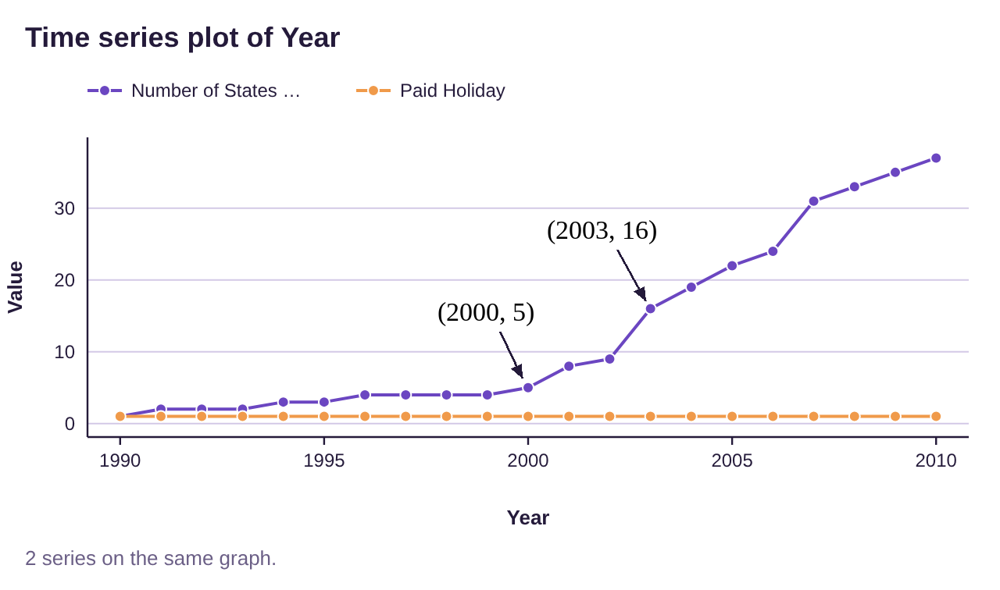
Figure 2.26: Blow up of time-series plot for the number of states observing Juneteenth by year.
STATBELT Utility- Making Time-Series Plots
Open STATBELT Utility and type or copy the times (such as years) into one column and the values into another column.
1.Select Graphs → Time series plot.
2.Choose the column of times for “Time column.”
3.Under “Value columns,” check the column or columns you want to plot.
4.Several columns are drawn on the same graph, with a legend.
5.Click “Open graph in a new window.”
In the previous example, we chose “Year” for “Time column” and checked both value columns, the number of states observing Juneteenth and the number observing it as a paid holiday. You can copy/paste the data from the Juneteenth data file (opens in a new tab) to try it yourself!
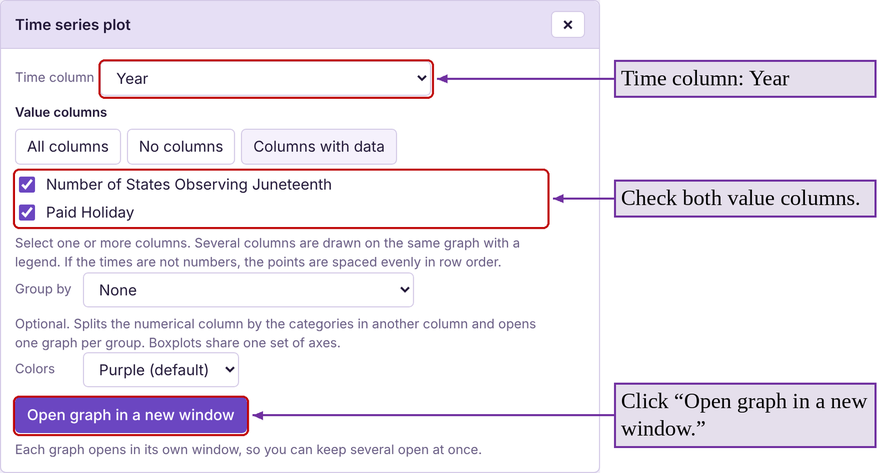
Example 14 Covid Deaths Time-Series Plot
The time-series plot in figure 2.27 tracks COVID-19 deaths per 100,000 by ethnicity from March 2020 to July 2022. Which ethnic groups were hit the hardest initially, early in 2020? Did that trend continue?
Solution: Early in the pandemic, the highest death rates per 100,000 belonged to Black and Hispanic people. Before vaccines were available, COVID affected Black, Latinx, Indigenous, and other people of color the most. This could have been due to a lack of access to health care, job or living conditions, or other factors. However, the death rates for those groups dropped below the death rate per 100,000 for Whites late in 2021 during the Delta variant wave. By early 2022, Black, Hispanic, and White had similar death rates. The Asian ethnic group appears to have maintained the lowest death rates throughout the pandemic. Vaccination rates can only partially explain that, as vaccinations did not exist until December 2020.
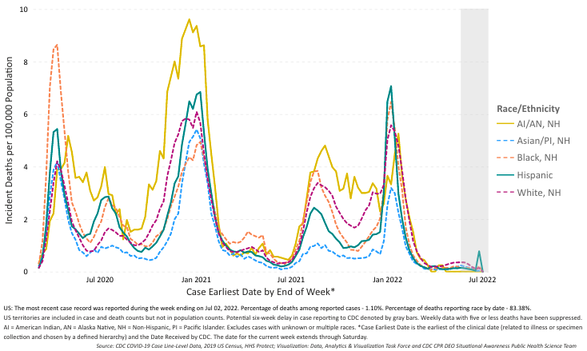
Figure 2.27: Time-series plot for the number COVID deaths by ethnicity. Source: CDC Health Equity (opens in a new tab)